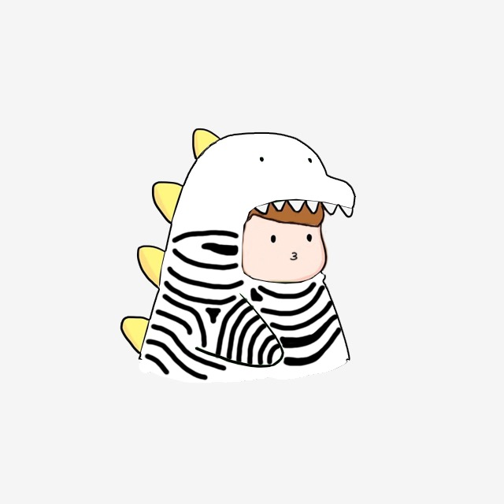
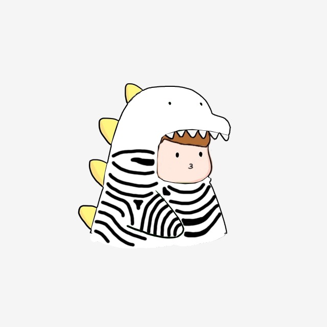

Rise of Kingdoms!
SAUZ - Sinnerz Among us
I played this game during the spring to the summer of 2020. During this period of time, I was depressed, but this game helped improve my mental health. I met people who were from different backgrounds around the world. Everyone was expereincing covid19 first-hand how it changed our lives. We would talk about political stuff, jobs, covid-19 from the United States all the way to Europe. Even though the game costed money to progress on even levels with everyone else, it was an enjoyable time to meeting each other. However, life picked back up and many of the players left to do their own things. I eventually also left the game but with good memories.
Here is the list of events
- Joined a small alliance
- Spent like 5-10 dollars on this game...
- Became one of the top players in the kingdom during the starter days.
- Spent even more money, roughly 50$ to keep up with other players.
- Won a war!
- Lost an alliance war weeks later.
- Left the alliance to join an alliance later known as SAUZ.
- Had a great bonding time with everyone!
- A whale (someone who spents tons of money into the game) in the kingdom gathered people who lost wars against us in SAUZ.
- He began his dictatorship, thus we all left to another kingdom with democracy
- Thus this ends my tale of spending over 500$ into this wretched game. HAHAHA

 
